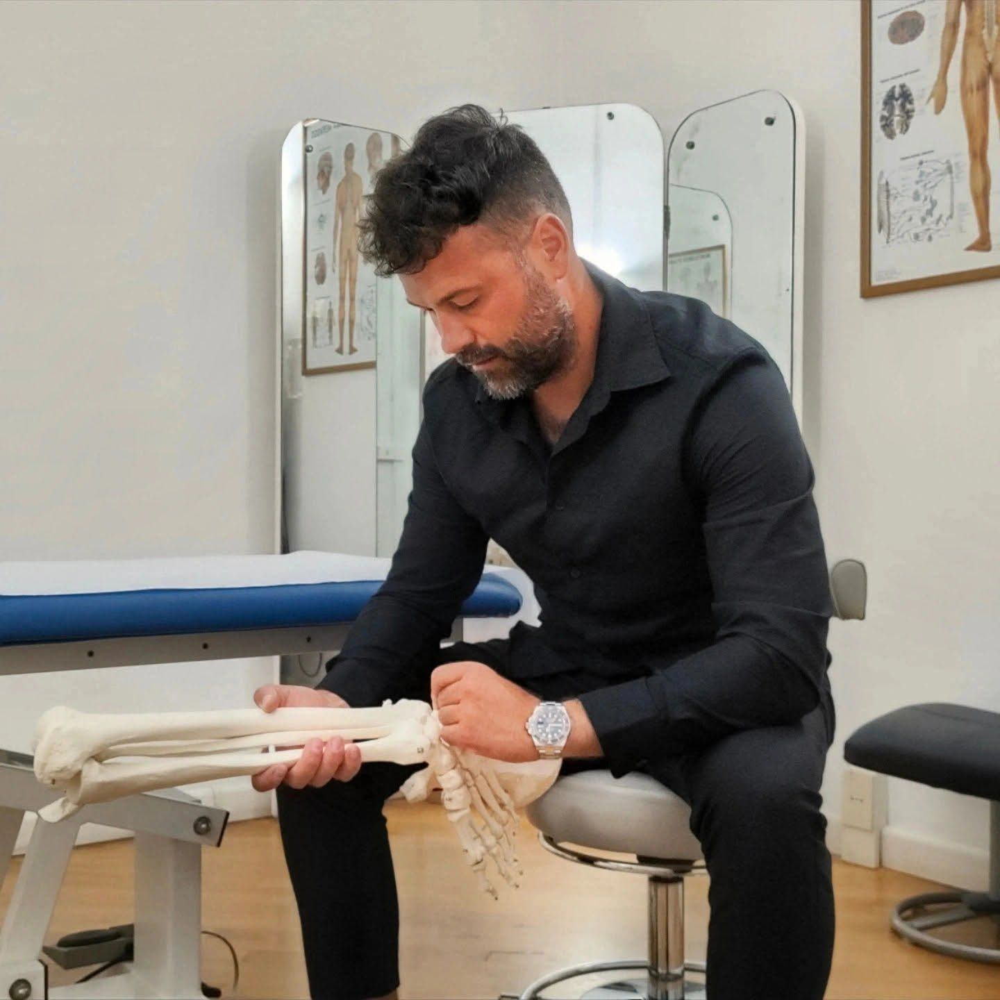
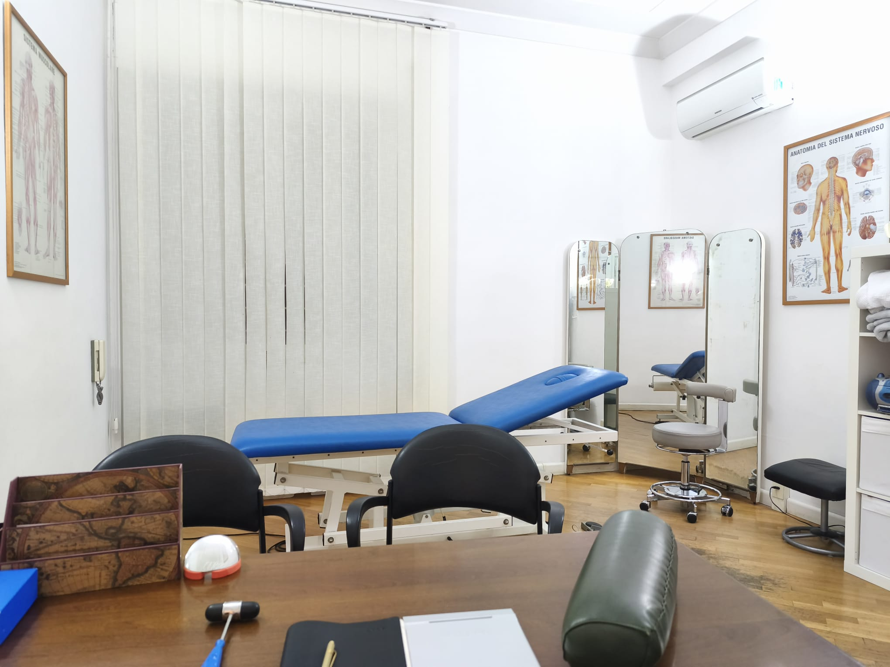

Reflusso gastrico
Il colloquio parte dai disturbi che riferisci e dalla tua storia clinica, insieme alla documentazione disponibile.
OSTEOPATIA E CHINESIOLOGIA A ROMA
Sono Christian Galeotti. Il primo passo è conoscere la tua storia: come ti muovi, cosa senti, di cosa hai bisogno.
Scopri la prima seduta
01 — IL MIO APPROCCIO
Lo sport mi accompagna fin dall’infanzia. Da lì nasce il mio interesse per il corpo e per il movimento.
La laurea in Scienze Motorie e il diploma in Osteopatia sono le tappe del mio percorso. In studio parto dal colloquio, dalla tua storia e dalla documentazione clinica.
Uno spazio per capire il motivo dell’incontro, fare domande e chiarire i passi successivi.
Conosci il mio percorso02 — GLI AMBITI
Reflusso gastrico, dolori alla schiena e problematiche posturali sono gli ambiti principali della mia attività.
Attività e prima sedutaIl colloquio parte dai disturbi che riferisci e dalla tua storia clinica, insieme alla documentazione disponibile.
Il punto di partenza è raccontare il dolore, quando si presenta e come incide sulle tue giornate.
Le tue abitudini, il lavoro e l’attività fisica entrano nel colloquio e nella valutazione iniziale.
Ricevo adulti e ragazzi dagli 8 anni in poi.
03 — IL PRIMO INCONTRO
Sapere cosa aspettarti è già
un buon punto di partenza.

Un colloquio per conoscere il motivo dell’incontro e raccogliere la documentazione clinica che porti con te.
La valutazione precede il trattamento e aiuta a inquadrare la situazione individuale.
Al termine della seduta, consigli dopo il trattamento e indicazioni sugli eventuali incontri successivi.
04 — LE ESPERIENZE
RECENSIONI SU GOOGLE
Le parole di chi ha scelto di raccontare la propria esperienza.
Punteggio e numero rilevati il 10 ottobre 2026.Chiarezza nel percorso
«Onesto e trasparente nel percorso suggerito»
Attenzione, dal primo incontro
«un professionista scrupoloso che sa darti consigli»
Un rapporto di fiducia
«Continuerò senz'altro con grande fiducia!»
Una selezione di brevi estratti.
Le recensioni complete sono disponibili su Google.
05 — DOVE RICEVO
Due studi, un contatto diretto.
Scegli la sede per il tuo incontro.
Roma
Ottieni indicazioniRoma
Ottieni indicazioniINFORMAZIONI UTILI
Porta con te la documentazione clinica disponibile.
Le tariffe sono comunicate su richiesta, prima dell’appuntamento.
Il numero di incontri dipende dalla problematica e dalla situazione individuale. Non è previsto un numero uguale per tutti.
Puoi telefonare o scrivere su WhatsApp, indicando lo studio in cui preferisci ricevere l’appuntamento.
IL PROSSIMO PASSO È SEMPLICE
Per informazioni o per concordare il primo incontro,
puoi contattarmi direttamente.